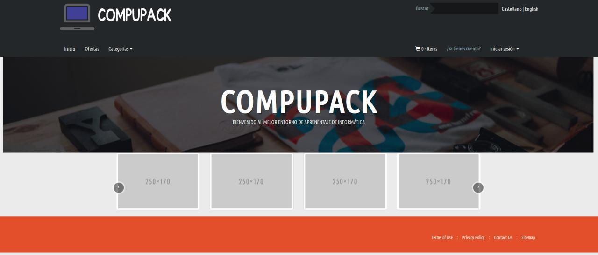
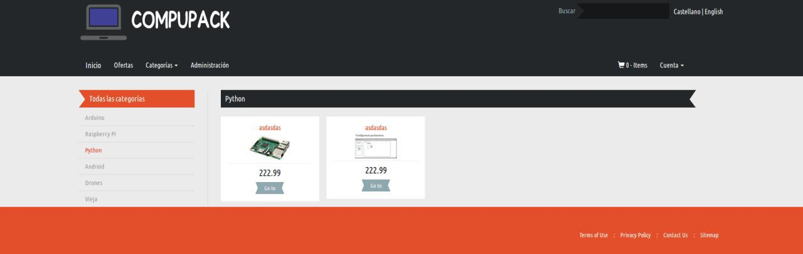

Compupack
Daniel Tomé Fernández
Ramon Forcadell Beltri
Idea de negocio
Curiosidad por aprender
Pero... ¿Por donde empezamos?
¿Y si proporcionamos por donde empezar?
Idea de negocio
Proporcionamos un producto y material para aprender
P.e. Una Raspberry Pi y un manual de aplicaciones/funcionalidades
Análisis DAFO
Fortalezas
- Comodidad (material + herramientas)
- Costes de producción mínimo
- Calidad de material y herramientas proporcionadas
Análisis DAFO
Debilidades
- Poca experiencia en el mercado
- Pocos trabajadores (falta de presupuesto)
- Aprendizaje de estos trabajadores (muchos ámbitos)
Análisis DAFO
Oportunidades
- Acuerdo con proveedores sobre material
- Única empresa a nivel nacional (material + herramientas)
- 75% de encuestados les interesaría
Análisis DAFO
Amenazas
- Escasez de capital
- No nos conocen (dudas de los clientes)
- Estudios demuestran que el número de matriculas en informática cada vez es menor
Datos relevantes

Objetivos de Marketing
Estudio de Situación Laboral del Sector TIC elaborado por (CCII) cifran en 373.100 profesionales informáticos en activo
Objetivos a 5 años vista
Vamos a desglosarlo año por año...
Objetivos de Marketing
Primer año:
- Cubrir costes y poder seguir con la empresa
- 500 clientes -> 50€/producto x 500 clientes = 25000€
Objetivos de Marketing
Segundo año:
- Mantener el máximo número de clientes
- 750 clientes
Objetivos de Marketing
Tercer año:
- Mantener el máximo número de clientes
- 850 clientes
Objetivos de Marketing
Cuarto/Quinto año:
- Mantener el máximo número de clientes
- 1000 clientes
Estrategia de marketing
¿A quién nos vamos a dirigir?
- Perfiles de personas relacionados a la informática
- Gente que sienta curiosidad por la informática
- Sin franja de edad
- Península Ibérica
Estrategia de marketing
¿En qué nos vamos a diferenciar?
- Comodidad
- Calidad
Definición de ejecución
Precio:
- Análisi competencia (SeisCocos, UCM, EuroInnova) entorno a 100€
- 30-50€ por curso (material no incluido)
Definición de ejecución
Producto:
- Dispositivo (directamente de fábrica)
- Documentación/material proporcionado por nuestra parte
- No tenemos garantia para nuestro producto (si para el dispositivo)
- Valor añadido: Atención al cliente
Definición de ejecución
Distribución:
- Usaremos SEUR
- Paquetes < 3kg =~ 12€
Definición de ejecución
Promoción:
- Redes sociales (Twitter, Facebook, Instagram, etc...)
- Newsletter
- Sistema de ofertas mediante un código
La web
La web
La web